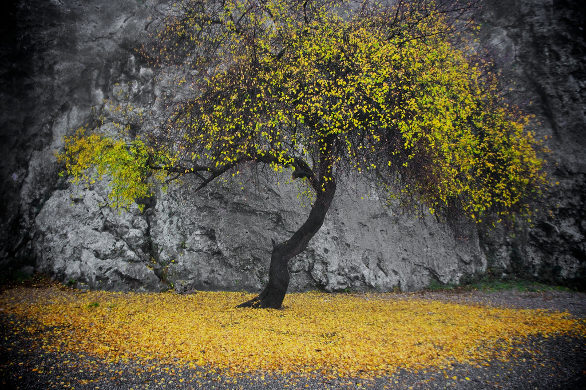

Skąd czerpać odwagę?
Daj jej milczenie, by dusza spokojnie powrócić mogła w zmienne fale życia…
Maj roku 1909. W Paryżu gości przez kilka tygodni Lou Andreas-Salomé. Po długiej rozłące udaje jej się wówczas ponownie spotkać z Rilkem.
Siedzieliśmy wtedy w jego wspaniałym, jeszcze przez samego Rodina umeblowanym refektarzu Sacré Coeur przed olbrzymią terasą, znad której z opuszczonego, zdziczałego ogrodu dolatywał zapach kwitnącej, wczesnej wiosny, towarzyszący owym długim tygodniom poświęconym pracy aż do zapamiętania — wspomina Lou.
Rilke mówi o wszechogarniającym transie tworzenia. Wewnętrzny przymus pisania zawładnął nim tak bezgranicznie, że w owym upojeniu naoczną rzeczywistość przenikały postacie i epizody rodem z jego dzieła. Mówi też o nieodpartej konieczności stworzenia sobie nowego, innego, własnego dzieciństwa, w miejsce tego, „którego właściwie nie miał”, które go ominęło.
Lou jest wstrząśnięta.
Nigdy nie zapomnę jego spojrzenia, oczy jego jakby przenikały na wskroś to lato kwitnące przed nami, gdy głosem pełnym smutku mówił: Widzisz, bo z tym jest jak w baśni, gdzie wrzuca się zaklętego bohatera w głębię studni o północy, a po trzech nocach wybija godzina jego wyzwolenia. Nadaremnie — bo skąd czerpać odwagę?
Fragmenty wspomnień Lou Andreas-Salomé w przekładzie A. Milskiej, fragment wiersza „Muzyka” w przekładzie A. Lama.